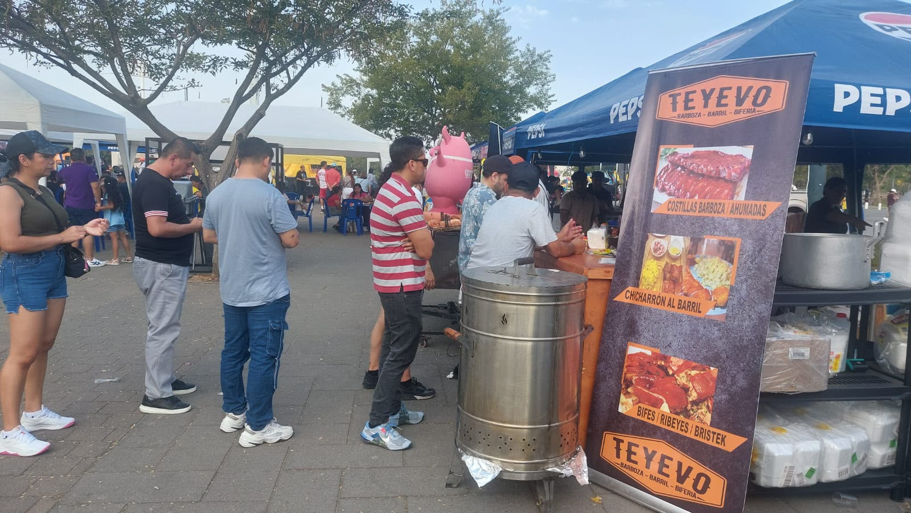
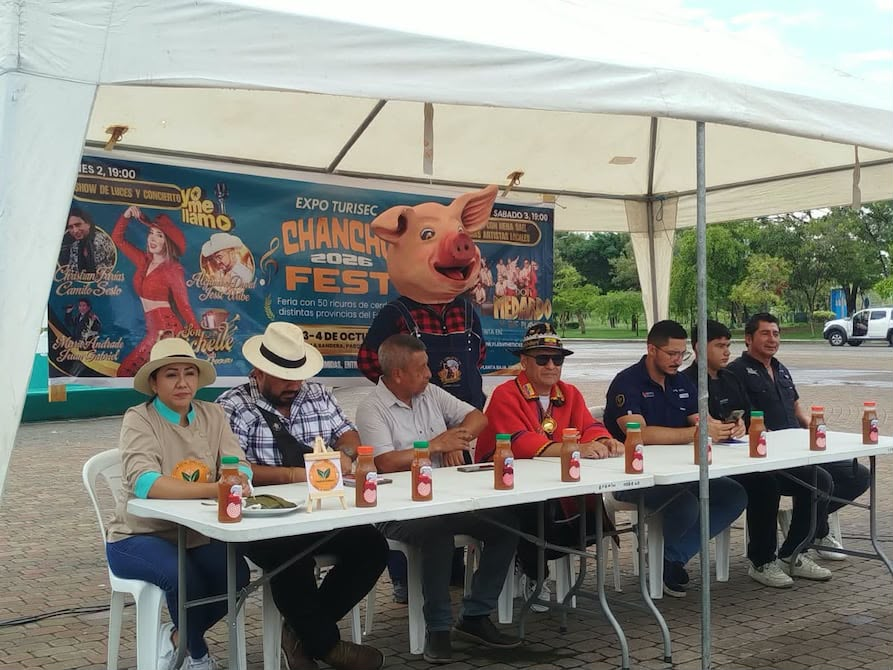
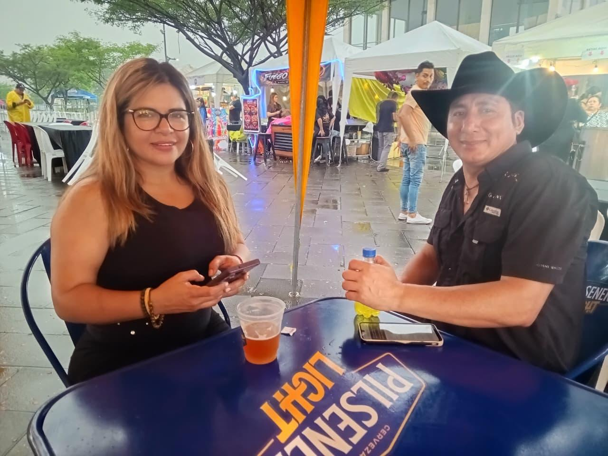

Comercio y Gastronomía
Analizamos la diversidad de puestos y la oferta local. Identificamos los platillos favoritos y cómo las preferencias del público asistente impulsan el éxito de los emprendedores.
Descubre la dinámica detrás del evento cultural y gastronómico más grande de nuestra comunidad.
Un análisis de datos recopilados del 2 al 4 de octubre en el Parque Samanes.
El Chancho Fest es un motor de comercio local e integración. Durante el evento, nuestro equipo se sumergió en el Parque Samanes para observar, encuestar y recopilar datos reales siendo nuestro objetivo entender los hábitos de consumo, la afluencia de las familias y cómo estas dinámicas impactan el desarrollo de nuestra comunidad.

Analizamos la diversidad de puestos y la oferta local. Identificamos los platillos favoritos y cómo las preferencias del público asistente impulsan el éxito de los emprendedores.

A través de observación directa, registramos el flujo de los asistentes. Evaluamos cómo las diferentes actividades de entretenimiento concentran a la audiencia y cuáles fueron las zonas de mayor interacción durante el evento.

Conversamos con los asistentes. Gracias a encuestas breves, capturamos su nivel de participación y opiniones, construyendo una base de datos vital para las siguientes etapas de nuestra aplicación.
El Chancho Fest se realizó en el Parque Samanes, Guayaquil.
Cómo llegar